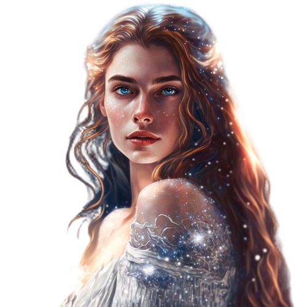
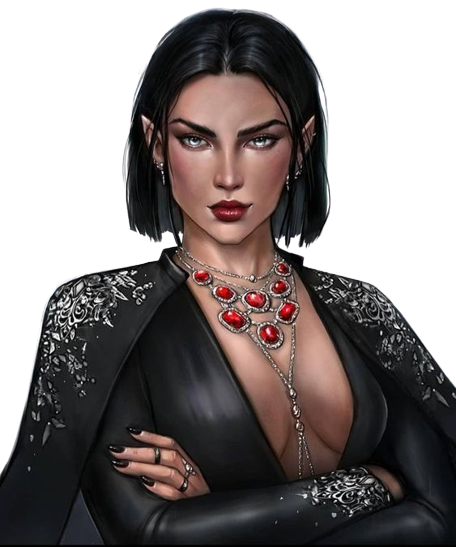
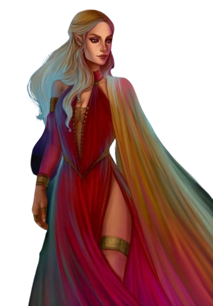
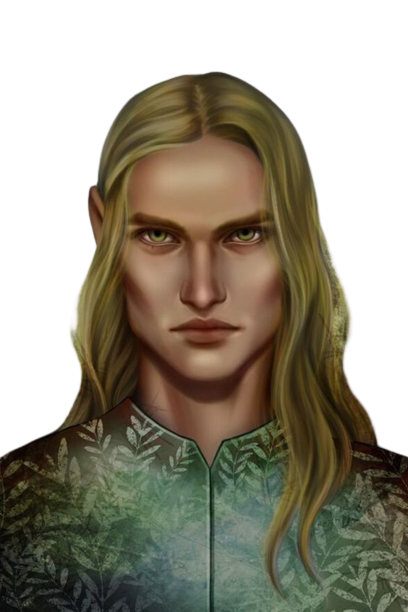
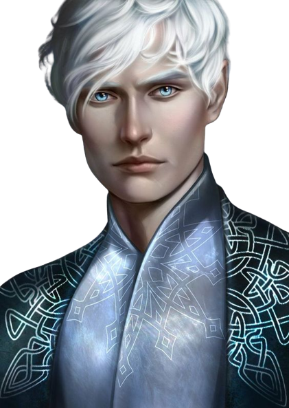
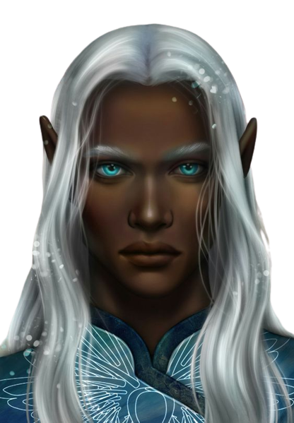
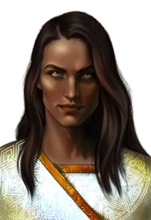

Rhysand é um governante enigmático e cativante da Corte Noturna.
Sua inteligência afiada e astúcia o tornam um líder carismático e leal,
sempre pronto para proteger e lutar pelos que ama. Apesar de sua fachada fria,
Rhysand possui um coração gentil e compassivo, representando esperança, superação e redenção.
Sua personalidade complexa e multifacetada o torna um personagem inesquecível na série.
Feyre é uma personagem corajosa, determinada e resiliente.
Como caçadora habilidosa, ela enfrenta desafios para proteger aqueles que ama,
demonstrando valentia. Além disso, Feyre é leal, dedicada e coloca as necessidades
dos outros antes das suas. Sua criatividade como artista a ajuda a se expressar.
Sua jornada de autodescoberta
e crescimento a transforma em uma figura inspiradora, capaz de superar limitações com coragem.


Cassian é um personagem cativante com uma personalidade audaciosa e apaixonada.
Sua coragem inabalável e força física impressionante o destacam como um guerreiro destemido,
disposto a lutar por justiça e liberdade. Ele é leal e dedicado, levando suas responsabilidades a
sério e protegendo seus amigos e aliados com uma dedicação incansável. Cassian também é uma pessoa
generosa de coração, capaz de demonstrar afeto e cuidado profundo pelos outros. Por trás de sua confiança,
Cassian carrega uma história de superação e dor, tornando-o uma figura complexa e fascinante.
Azriel é um dos personagens mais enigmáticos e possui uma personalidade silenciosa e sombria.
Ele é reservado e introspectivo, mantendo suas emoções e pensamentos em segredo. Como espião
habilidoso e estrategista, ele observa atentamente o ambiente ao seu redor. Azriel é leal e
dedicado, disposto a fazer sacrifícios pelos que ama. Sua seriedade e determinação o mantêm
focado em suas responsabilidades, sem permitir que as emoções interfiram. Por trás de sua
aparência austera, Azriel esconde um passado doloroso
e segredos profundos, o que adiciona um elemento de mistério à sua personalidade.


Amren é um personagem intrigante com uma personalidade enigmática e poderosa.
Ela é conhecida por sua natureza misteriosa e reservada. Amren é uma guerreira destemida e letal,
capaz de enfrentar qualquer inimigo com coragem e determinação. Sua inteligência afiada e
perspicácia permitem que ela enxergue além das aparências e descubra as verdadeiras intenções das pessoas.
Sua personalidade forte e imponente a torna uma aliada valiosa e imprevisível. Por trás de sua fachada fria,
Amren guarda segredos profundos e um passado misterioso, acrescentando camadas de complexidade à sua personalidade.
Morrigan, também conhecida como Mor, é uma personagem intrigante e enigmática.
Ela possui um senso de humor afiado e uma personalidade extrovertida, o que a torna uma figura misteriosa.
Mor é corajosa e destemida, enfrentando os desafios de frente. Sua lealdade aos amigos e aliados é]
inabalável, disposta a protegê-los a qualquer custo. Além disso, Morrigan é compassiva e empática,
capaz de se conectar profundamente com os outros e oferecer apoio emocional quando necessário.
Por trás de sua confiança, Mor carrega segredos e traumas, o que a torna uma personagem complexa e cativante.


Nestha é uma personagem complexa,
caracterizada por sua força e determinação. Ela é feroz e implacável,
sempre disposta a lutar pelo que acredita. Sua coragem e independência a tornam destemida,
enfrentando seus medos e desafiando expectativas impostas a ela. Por trás de sua aparente dureza,
Nestha guarda um coração sensível e vulnerável.
Ela enfrenta seus próprios demônios e traumas, contribuindo para sua personalidade complexa e imprevisível.
Elain é uma personagem delicada e gentil, com uma personalidade serena e compassiva.
Sua alma pacífica busca sempre a harmonia e bondade ao seu redor. Ela é reconhecida por sua sensibilidade
e empatia, capaz de se conectar profundamente com as emoções e necessidades dos outros. Como amante da natureza,
encontra conforto e beleza nas plantas e flores. Apesar de sua natureza suave,
Elain também mostra uma notável força interior, superando adversidades e protegendo aqueles que ama.


Tamlin, é um fae poderoso e complexo. Inicialmente, ele é retratado como um governante nobre e protetor
da Corte Primaveril. Tamlin possui uma personalidade intensa e apaixonada, demonstrando lealdade e determinação
em proteger seu povo. No entanto, ao longo da história, sua personalidade revela-se possessiva e controladora.
Ele sucumbe à escuridão e se torna um obstáculo para o crescimento e liberdade da protagonista.
Tamlin é um exemplo de como o poder pode corromper
e transformar uma pessoa. Sua jornada retrata os perigos do egoísmo e do desejo desmedido por controle.
Kallias, é um fae intrigante e enigmático.
Ele é conhecido como o governante da Corte do Inverno e possui uma personalidade reservada e fria.
Kallias é extremamente dedicado ao seu povo e à manutenção do equilíbrio na sua corte.
Ele é um líder estratégico e habilidoso, capaz de tomar decisões difíceis para garantir a segurança
e a prosperidade de seu reino. Por trás de sua aparência austera, Kallias guarda um coração compassivo
e uma profunda sensibilidade artística.
Sua história revela uma jornada de autoconhecimento e superação, tornando-o uma figura cativante e inspiradora na história.


Beron, é um rei poderoso e autoritário da Corte do Outono.
Sua personalidade é marcada pela arrogância e pela busca implacável pelo poder.
Beron é conhecido por seu comportamento controlador e manipulador, buscando sempre expandir sua
influência e dominar os outros. Ele é um líder temido, mas também odiado por sua crueldade e falta de empatia.
Sua sede de poder o leva a cometer atos de violência e opressão. Beron representa os
perigos do abuso de poder e as consequências de se colocar os interesses pessoais acima do bem-estar de seu povo.
Tarquin, é o governante da Corte do Mar Profundo.
Ele é conhecido por sua personalidade sábia, justa e pacífica. Tarquin é um
líder respeitado e amado por seu povo, sendo um defensor da diplomacia e da
cooperação entre as cortes. Ele busca a harmonia e a estabilidade em seu reino,
estando disposto a fazer alianças e buscar soluções pacíficas para os conflitos.
Tarquin é um homem de princípios e valores elevados, colocando a justiça e a igualdade em primeiro lugar.
Sua sabedoria e compaixão o tornam um personagem inspirador, que busca a paz e a compreensão entre as raças fae.


Thesan é o Grão-Senhor da Corte Crepuscular.
Thesan é esbelto e tem a pele e cabelos castanhos,
beijado de ouro como se o nascer do sol os houvesse permanentemente dourado,
e quando está com os olhos abertos, o rico marrom dos campos recém-cultivados,
fosse sua característica mais adorável. A voz de Thesan era tão profunda e rica quanto aqueles olhos.
Sendo o Lorde Supremo da Corte Crepuscular, ele tem a habilidade de curar os outros.
No entanto, é atualmente desconhecido se ele
também teria que usar o método de dar sangue, como Feyre faz ou se ele é capaz de
curar de uma maneira diferente.
Helion, é o Grão-Senhor da Corte Diurna. Ele é conhecido por sua personalidade extravagante e carismática.
Helion é um líder astuto e perspicaz, capaz de antecipar movimentos e negociar acordos vantajosos para sua corte.
Ele é um defensor da liberdade e da igualdade, lutando pela justiça e pelos direitos dos faes.
Helion também é conhecido por sua habilidade de mudar de forma e pela sua conexão com o fogo.
Sua personalidade ardente e sua natureza ousada o tornam uma figura intrigante e imprevisível.
Helion representa a força e a paixão que podem ser encontradas no coração daqueles que buscam a verdade e a igualdade.
